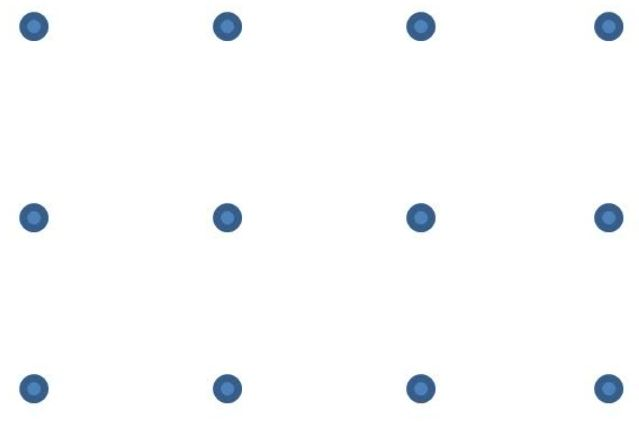
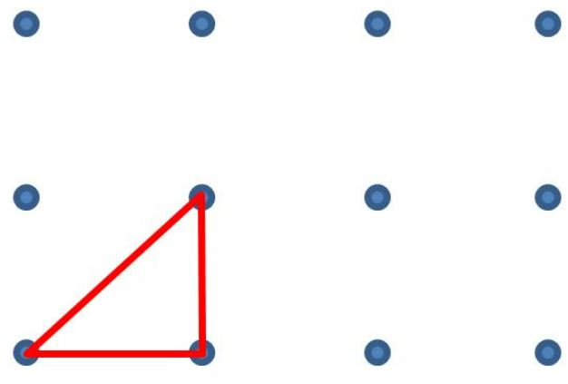
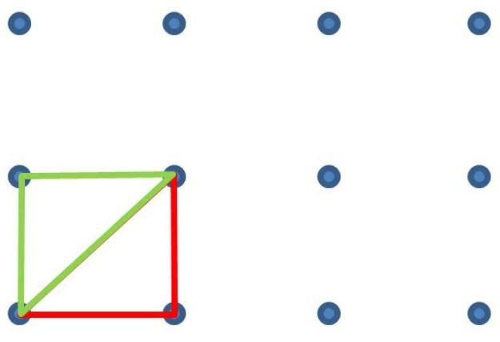
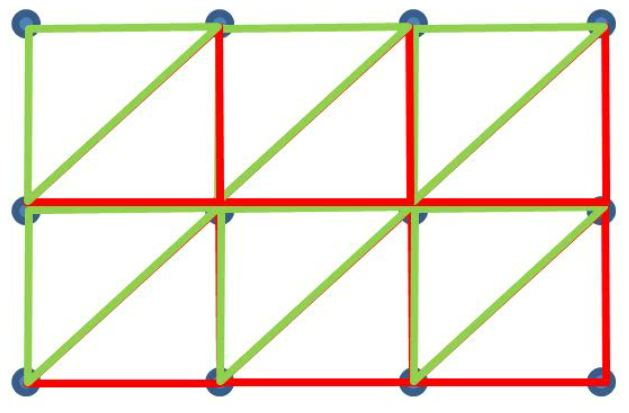
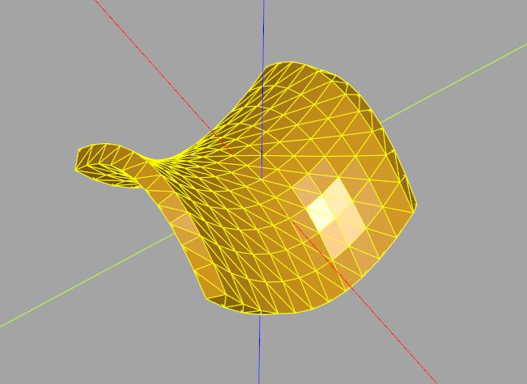
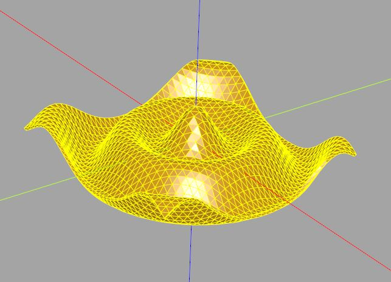

建立網格面
November 26, 2021在〈曲線與曲面〉中談過的 parametricSurface，無法指定厚度，而 interpPlate 雖然可以指定厚度，不過其內插求曲面的方式並不適用多數場合。
定義網格
這時可以試著自行構造曲面，當然，就算是指定面的點，也有不同的方式，最通用的一種應該是像 matplotlib 的 plot_surface，以網格的方式指定面上每個點（可參考〈Matplotlib 立體圖〉）。
在這邊規範，若有個函式 f(x, y)，產生點的方式要是：
points = []
for y in range(min_value, max_value, step):
row = []
for x in range(min_value, max_value, step)
row.append([x, y, f(x, y)])
points.append(row)
先採用 f(x, y) 的形式，只是為了便於後續後說明，實際上只要能產生相對應格式的 points，你想用這一篇文章即將實現的函式，來建立一個環或球，基本上也不是問題（可以參考〈NumPy 與環面（一）〉、〈NumPy 與環面（二）〉）。
三角面索引
因為在〈實作 polyhedron〉中建立的 polyhedron，可以接受點與面索引來建立 3D 實體，只要能從方才的 points 自動產生這兩個資料就可以了，因為 points 採用網格的方式，切割三角形就很容易。例如，你有以下的點：

每個點往右與往右上各取一個點，就可以構成三角形：

每個點往右上與往上各取一個點，也可以構成三角形：

這樣就處理完一個方格了，接著就是使用迴圈處理完每個方格：

這邊規範看向曲面為正面，另一面為背面，頂點的順序為看向曲面時的逆時針方向。
那麼厚度呢？雖然對於 f(x, y) 之類的函式，單純地將面上每個點上升、下降一個高度，可以建立起厚度，這種作法計算上也簡單許多，不過，這會限縮曲面函式的用途，例如，如果你的面並不是上下有厚度，而是左右有厚度呢？
比較好的方式是，採用頂點法向量，來位移面上的點，這一方面是因為，points 指定的點，實際上就是用來作為 3D 實體的頂點。
在實作上，照理來說，是要收集某頂點周圍的面，將這些面各自的法向量加總後平均，作為某頂點的法向量，不過，CadQuery 的 Face 提供了 makeSplineApprox，你可以提供控制點，建立一個基於 B-spline 的曲面，它有個 normalAt，可以計算指定點的法向量，這可以省去不少自行實作求頂點法向量的功夫。
實作 surface
有了正面與背面的點，剩下的就是計算面索引的功夫而已，這部份就只有一個原則，別粗心算錯就好了，底下程式碼是包含了〈實作 polyhedron〉中建立的 polyhedron 函式，以及這邊新實作的 surface 函式：
from cadquery import Vector, Vertex, Edge, Wire, Solid, Shell, Face
def polyhedron(points, faces):
def _edges(vectors, face_indices):
leng_vertices = len(face_indices)
return (
Edge.makeLine(
vectors[face_indices[i]],
vectors[face_indices[(i + 1) % leng_vertices]]
)
for i in range(leng_vertices)
)
vectors = [Vector(*p) for p in points]
return Solid.makeSolid(
Shell.makeShell(
Face.makeFromWires(
Wire.assembleEdges(
_edges(vectors, face_indices)
)
)
for face_indices in faces
)
)
def surface(points, thickness):
leng_row = len(points)
leng_col = len(points[0])
leng_pts = leng_col * leng_row
def _all_pts():
half_thickness = thickness / 2
# 轉為向量
vectors = [[Vector(*p) for p in row] for row in points]
# 用於查詢指定位置的法向量
# makeSplineApprox 的控制點以每行（column）為一組
# 因此需要將 points 轉置
face = Face.makeSplineApprox([[
Vector(*points[ri][ci])
for ri in range(leng_row)
] for ci in range(leng_col)]
)
front_thicken_pts = [] # 正面的點
back_thicken_pts = [] # 背面的點
for row in vectors:
for vt in row:
# 頂點處的單位法向量
n = face.normalAt(vt).normalized()
# 計算正面的點並收集
v = vt + n.multiply(half_thickness)
front_thicken_pts.append([v.x, v.y, v.z])
# 計算背面的點並收集
v = vt + n.multiply(-half_thickness)
back_thicken_pts.append([v.x, v.y, v.z])
return front_thicken_pts + back_thicken_pts
def _all_faces():
# 正面索引
front_faces = []
for ri in range(leng_row - 1):
for ci in range(leng_col - 1):
front_faces.append(
[ci + leng_col * ri, (ci + 1) + leng_col * ri, (ci + 1) + leng_col * (ri + 1)])
front_faces.append(
[ci + leng_col * ri, (ci + 1) + leng_col * (ri + 1), ci + leng_col * (ri + 1)])
# 背面索引
back_faces = [[f[2] + leng_pts, f[1] + leng_pts, f[0] + leng_pts] for f in front_faces]
# 四個邊的索引
side_faces1 = []
for ci in range(leng_col - 1):
side_faces1.append([ci, ci + leng_pts, ci + 1])
side_faces1.append([ci + leng_pts, ci + leng_pts + 1, ci + 1])
side_faces2 = []
rx = leng_col - 1
for ri in range(leng_row - 1):
side_faces2.append(
[rx + (ri + 1) * leng_col + leng_pts, rx + (ri + 1) * leng_col, rx + ri * leng_col])
side_faces2.append(
[rx + ri * leng_row + leng_pts, rx + (ri + 1) * leng_col + leng_pts, rx + ri * leng_col])
side_faces3 = []
for ci in range(leng_pts - leng_col, leng_pts - 1):
side_faces3.append([ci + 1, ci + leng_pts, ci])
side_faces3.append([ci + 1, ci + leng_pts + 1, ci + leng_pts])
side_faces4 = []
for ri in range(leng_row - 1):
side_faces4.append([ri * leng_col, (ri + 1) * leng_col, (ri + 1) * leng_col + leng_pts])
side_faces4.append([ri * leng_col, (ri + 1) * leng_col + leng_pts, ri * leng_row + leng_pts])
return front_faces + back_faces + side_faces1 + side_faces2 + side_faces3 + side_faces4
return polyhedron(_all_pts(), _all_faces())
應用 surface
先來個簡單的雙拋物面：
# 要結合以上的 polyhedron 及 surface
def paraboloid(x, y):
return [x, y, ((y ** 2) - (x ** 2)) / 4]
min_value = -30
max_value = 30
step = 5
thickness = 0.5
points = [[
paraboloid(x / 10, y / 10)
for x in range(min_value, max_value, step)
] for y in range(min_value, max_value, step)]
solid = surface(points, thickness)
show_object(solid)
這可以建立以下的模型，只要改變 step 的大小，就能改變細緻的程度：

來看看另一個漣漪模型：
from math import cos, sqrt, radians
# 要結合以上的 polyhedron 及 surface
def ripple(x, y):
n = radians(sqrt(x ** 2 + y ** 2))
return [x, y, 30 * (cos(n) + cos(3 * n))]
min_value = -200
max_value = 200
step = 10
thickness = 5
points = [[
ripple(x, y)
for x in range(min_value, max_value, step)
] for y in range(min_value, max_value, step)]
solid = surface(points, thickness)
show_object(solid)

在厚度建立的部份，往頂點法向量兩個方向各位移半個厚度，只是其中一種方式，畢竟面本來就沒有厚度的概念，你要怎麼方向位移，其實都可以，或許可以有個 direction 參數，能自行指定位移的方向，例如，僅往正面或背面的法向量位移，或是可指定一個向量作為統一的位移方向之類的，這就留給你自己當練習了。